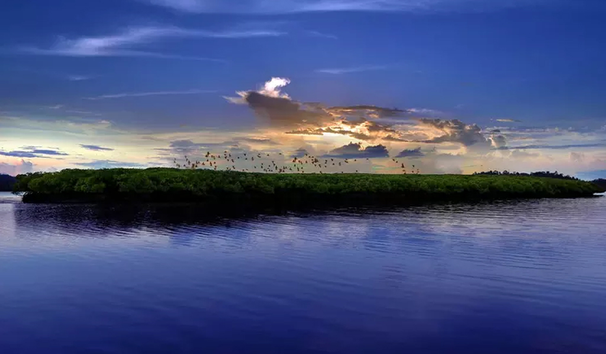

The Cellular Jail, also known as Kālā Pānī (Hindi for black waters), was a colonial prison in the Andaman and Nicobar Islands, India. The prison was used by the British for the express purpose of exiling political prisoners to the remote archipelago. Many notable independence activists, including Batukeshwar Dutt, Yogendra Shukla, and Vinayak Savarkar were imprisoned here during the struggle for India's independence. Today, the complex serves as a national memorial monument

Havelock Island is one of the primary destinations of Andaman and Nicobar Islands. It is famed for its pristine beauty that goes unmatched when it comes to untouched and unexplored natural beauty and virgin forests of earth. It is a striking contrast of verdant greenery, sandy whiteness and blue vast ocean body. Due to its more than fair share of popularity among tourists and travelers, Havelock has developed luxurious tourist resorts and hotels to pamper the guests living in the lap of intense natural beauty. Havelock is the largest of islands and falls under must-visit destinations. A tour to Andamans would definitely be incomplete without a visit to the Elephant Beach and Radhanagar Beach of Havelock Island. The sublime beauty of the Radhanagar Beach combines with its perfect setting spread against the primitive jungles. The background is filled with a thousand sounds of jungle animals and birds and the secluded beach has “Beware of Crocodiles” marked at places. These factors make Radhanagar Beach one of the most coveted destinations of not only Andamans, also of world.
Snorkelling and scuba diving at Havelock under the aegis of expert trainers can turn into a lifetime experience. Watch the myriad sea creatures, some still and some moving, some peeping and some hiding, some iridescent and some camouflaged, some in groups of thousands and some single and solitary guarding protected corners of shelter. Each lap ahead as you swim through with the sea animals brings you face to face with a new wonder.
The enchanting Parrot Island is the wonderful abode of thousands of parrot. They leave the island at around sunrise and again come back around sunset creating a flurry of energetic activities and the island seem to quiver green with the parrots returning to their abodes. It is haven for bird watchers, nature lovers, curious tourists and enthusiastic naturalists. This island is considered as the most beautiful island of Baratang area and is uninhabited. Its beauty emanates from its feathered inhabitants, the gorgeous parakeets. A boat ride around the island gives a great view of the island as well as the sunset spreads its warm golden glow and creates for a surreal beauty that is heavenly. The Parrot Island is located 30 kilometres from the Baratang Jetty.
Crystal-clear water, pearl white sand, endless coconut trees and clear blue sky. No, this not a description of an imaginary beach painting. This is exactly how Corbyn’s Cove Beach looks.
If you are planning to for a beach vacation where you can relax in tranquillity, sunbathe under the shade of coconut trees, take a rejuvenating dip and spend quality and intimate time with your family and friends, Corbyn’s Cove Beach is just the one of the right places to visit in Port Blair for you.